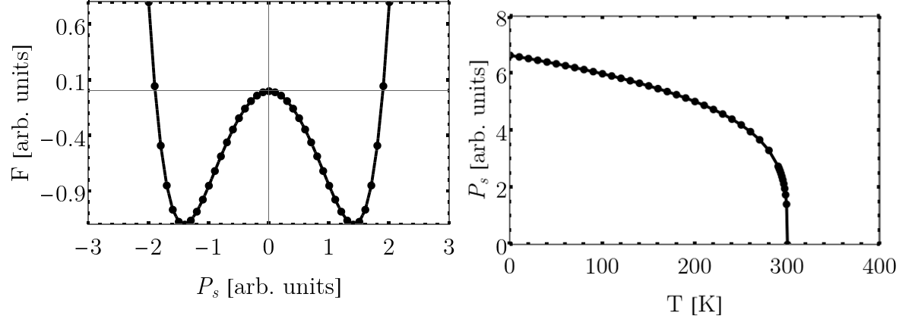
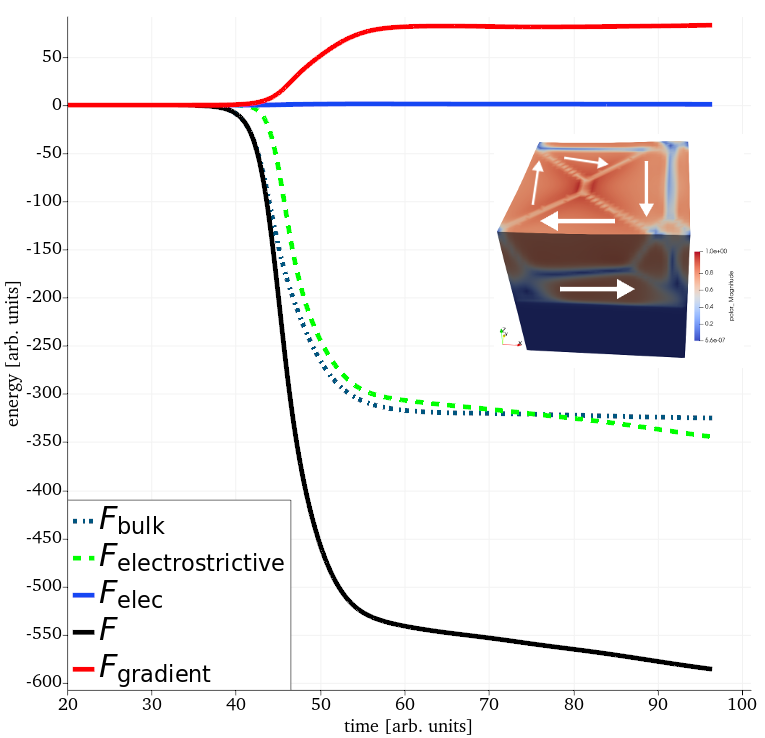

Phase field method of ferroelectrics

Figure 1: Left; conventional double well energy surface of a ferroelectric below . Right; Nonzero as a function of temperature.
The ferroelectric (FE) phase field method utilizes a thermodynamic approach to describe the FE phase transition. Within this theoretical description, these materials are characterized by the onset of a primary order parameter that becomes nonzero below a critical Curie temperature . In the case of canonical FEs such as or , the primary order parameter is the electric dipole moment. In both of these compounds, below , the material symmetry is lowered from cubic to tetragonal. The ionic displacements (the relative off-centering the Ti atom) give rise, spontaneously, to a net nonzero polarization or .
To describe this transition, the time-dependent Landau-Ginzburg-Devonshire (TDLGD) equation can be evolved to search for ground states of the system,
(1)
Here, the system energy is given by whose minimum is when . The action of evolving Eq. (1) is to follow the energy down towards the minimum by starting from a sufficiently close estimate of the cubic state with . Since the FE material has more than one energy minima corresponding to the tetragonal (six-fold) symmetry (see above double well for , domains will form characterized by equal energy configurations of . The strength of the FE phase field method is that it allows the identification of arbitrary orientations of in the continuum limit (agnostic of length scales typically restrictive of atomistic simulations). The domain patterns can be predicted given a relatively simple set of inputs. Within the FERRET/MOOSE ecosystem, the finite element method is employed to discretize Eq. (1) onto regular or irregular grids. The use of the latter allows for one to search for domain patterns in arbitrary geometries (i.e. nanoparticles or curved surfaces).
In thin film samples, these domain orientations depend strongly on temperature or other external applied fields (i.e. electric or mechanical in origin) which can also be included in the calculations. The coupling to the electric fields (internal and/or external) are provided by the Poisson equation,
(2)
where the electric field is defined in the usual way . If the system has a strong dependence on elastic fields (as is the case for most ferroelectrics), then mechanical equilibrium can be sought be solving
(3)
where is the total stress tensor and denotes spatial derivatives in the direction. Eqs (2) and (3) can be solved at every time step in the evolution of Eq. (1). In the phase field approach, the decomposition of contains different contributions due to different physics,
(4)
with the bulk double well potential density, the gradient energy density penalty for formation of domain walls, linear elastic energy density, interaction energy density for the inclusion of an internal or external field, the electrostrictive energy density coupling between the dipole moment and the strain fields. All of these terms can be expanded up to arbitrary order depending on the material symmetry and need for accuracy of predicted spontaneous order parameter values.
For the gradient energy density, one typically uses the lowest-order Lifshitz invariants as described in Cao and Barsch (1990) and Hlinka and Marton (2006),
which requires knowledge of (material specific). Higher order terms are possible although not generally necessary to describe the domain wall structure in bulk or thin film. For canonical perovskites, there is a good understanding of the values of these parameters along with the bulk expansion coefficients . A typical relaxation of the TDLGD equation is provided below which shows the resulting flux-closure structure along with the time dependence of each of the energy terms as the energy is minimized.

Figure 2: Time evolution of the ferroelectric energy for a small block of material - competition arises from the formation of interfacial regions (domain walls) and the bulk energy which prefers aligned polar states.